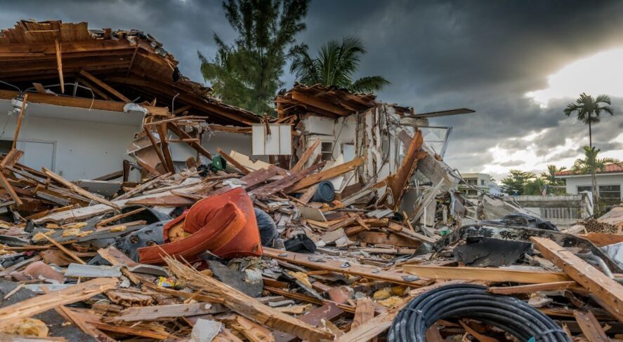

Flood modeling and rapid damage assessment, built on regional-scale topography with local precision.

Flooding is increasing in intensity and frequency. Accurate flood modeling needs decimeter-scale topography across whole sub-watersheds — but high-resolution regional data was historically prohibitively expensive, and coarse models (as low as 100×100 m) leave stakeholders guessing.
Reliable, decimeter-scale vertical and horizontal data across an entire sub-watershed — because all surrounding topography affects flood risk.
Sequoia characterizes whole sub-watersheds at the resolution accurate urban planning requires.
Acadia converts raw data into finished, high-density elevation and terrain models.
3DEO provides the baseline; partners like Flood Dynamics maintain an active forecasting dashboard that updates as weather changes.
Long-standoff, wide-area collection at up to 900 km² per hour from the flight levels.
Book a call to scope your project, or request representative point clouds for review.